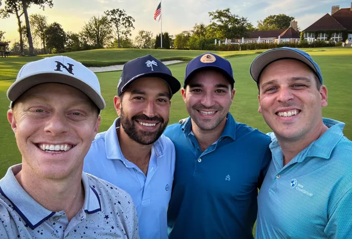

This series
goes deep with some of the most compelling figures in commercial
real estate: the dealmakers, the game-changers, the city-shapers
and the larger-than-life personalities who keep CRE
interesting.
Ben Harris founded Uncommon Capital Group to open up commercial
real estate opportunities traditionally reserved for institutional
players to private wealth investors.
He started the company in 2020, well before market conditions
sidelined many of those institutional players and opened the door
for private capital to fill the gap. Now, he’s leveraging the
latest advancements in technology to provide even greater value
for his investors.
 Courtesy of Ben Harris
Ben Harris on a father-daughter hike in Vail, a favorite family
destination.
Courtesy of Ben Harris
Ben Harris on a father-daughter hike in Vail, a favorite family
destination.
“Real estate is an interesting industry,” Harris said. “It's been
around for many, many decades, and even though technology has
advanced, it hasn't really permeated its way into how the real
estate industry has done things. I'm not talking about just buying
and building deals, but really the entire ecosystem.
“At Uncommon, we've become kind of borderline obsessed with
artificial intelligence,” he added.
Harris spoke to Bisnow about leveraging AI in commercial real
estate, founding his company and forecasting the financial
environment for the year ahead.
This interview has been edited for length and clarity.
Bisnow: How did Uncommon Capital Group get its start, and where
did you see the need for this kind of platform in a lower-rate
environment?
Ben Harris: I founded Uncommon Capital Group in
2020 on the heels of two incredibly formative job experiences. The
first one was at a subsidiary of
Starwood Capital Group. I was the sixth employee, and at the time, we had a strategy
that wasn't yet funded. Fast forward two years and we went from
six employees to over 200 employees, from zero in assets under
management to over $7B in assets under management. It was this
incredibly formative experience, all entirely funded by
institutional investors.
Then I moved to another Chicago-based firm,
Origin Investments, which at the time was a very emerging manager with ambitions to
grow into a well-known brand. Two principals asked if I would
start and lead the investor relations and business development
team. At the time, I was 25 years old. I did not have
institutional relationships. I also really didn't have many
relationships with high-net-worth individuals, but I felt like I
could have some success there. After five years, we raised
hundreds of millions of dollars with that strategy, and I realized
just how underserved high-net-worth individuals, family offices
and wealth management firms were in the real estate private equity
space. Either they weren't seeing anything at all, they were
seeing a suboptimal deal at the country club or someone was
bringing them something that was pretty picked over.
I started Uncommon Capital Group in 2020 to change that. I really
wanted to bring an institutional experience to private-wealth
investors, and what that meant was curating a group of family
offices, wealth management platforms and ultra-high-net-worth
individuals and then curating select opportunities with that.
We're really trying to redefine private real estate investing.
Bisnow: Are these opportunities curated in a particular asset
class?
Harris: Our primary focus is in middle-market,
real estate private equity funds that are anywhere from $150M up
to $500M. In terms of asset classes, we still like some of the
main food groups, but we really like the niches. Historically,
industrial has been our largest, most favorite asset class.
But more recently, we've been working in industrial outdoor
storage. Historically, we did some in multifamily, but more
recently, we’ve been doing a lot more student housing. We've been
focusing on the niches because we think those offer really strong
risk-adjusted opportunities, especially in the middle markets.
Courtesy of Ben Harris
Ben Harris, founder of Uncommon Capital Group, and his wife, Thea,
enjoying a getaway in Miami.
Bisnow: What excites you about building a company from the ground
up?
Harris: Real estate is an interesting industry.
It's been around for many, many decades, and even though
technology has advanced, it hasn't really permeated its way into
how the real estate industry has done things. I'm not talking
about just buying and building deals, but really the entire
ecosystem.
At Uncommon, we've become kind of borderline obsessed with
artificial intelligence. I was an early adopter, using it more in
my personal life, but pretty quickly realizing just how powerful
it can be for businesses today. With the pace of innovation, I
realized just how powerful it will be in several months. I can't
even imagine what it will look like in a few years.
We mapped out all of our processes and figured out where
artificial intelligence could take something and make it faster
and give us back some of our own time. For example, we actually
have various custom GPTs for different tasks, and that's something
that I was able to play with on a weekend, wake up on a Monday and
do it, because it's my business and we're entrepreneurial. It’s
that part of the process that gets me really excited.
Bisnow: Does AI give you a bit of additional leverage to be able
to punch above your weight when using some of these technologies,
like these custom GPTs?
Harris: Our mission is to help private investors
do better in real estate investing. So with that always being our
North Star, I know that I want to see as much as possible and be
able to work through that funnel as thoroughly as possible so that
what drops out of the bottom are the best-curated opportunities.
That is a very time-consuming process. That’s why I just hired a
vice president of investments to help oversee that process with
me.
But there's a lot that can be done with leveraging artificial
intelligence. For example, we built a custom screener that we can
just pop in a deck and it will automatically score it for us based
on what we told it it cares about. We have seven table-stakes
criteria that just have to be met for us to even take the initial
call before we advance into diligence because that part of the
process is very time-consuming. Sometimes, investors say, “How'd
you meet with 400 groups last year?” That's because we can
leverage technology to do it. We can actually figure out who's
worthwhile spending time on pretty quickly by leveraging
technology.
Bisnow: How do your clients feel about the use of AI in your
workflow?
Harris: It's just an initial screener, and at the
end of the day, it is not running the full diligence process. We
are still leveraging our decades of experience and institutional
expertise to really run a comprehensive, multimonth diligence
process, but there are parts that artificial intelligence is
helpful for. What we do when we meet with current clients to give
them updates or meet with prospective clients, we pop open the
screen, ask them to send us any deck and we pop it in. And in
under five seconds, it's perfectly summarized for them. That's
just the high-level screener.
Now, you can't trust everything that you read in a deck.
Certainly, there's legal documents, you have to vet the strategy.
That today all happens outside of our GPT, and that's the process
that we run on behalf of our clients. That's really our huge
value-add to them. But certainly they're impressed by the
technology, and they understand we're in our earliest days of
building it. They can see where it might be going, and it does
help us stand out from the crowd. Not many groups are doing it,
and we're not doing it for show. It's actually effective.

Courtesy of Ben Harris
One of Ben Harris’s favorite activities is golfing with his
clients and friends.
Bisnow: What else do you utilize AI for?
Harris: Content. A huge part of our value-add is
educating our clients. The family offices, the wealth management
professionals, the ultra-high-net-worth individuals, they're
highly sophisticated, but they're also nonindustry professionals
to real estate specifically. So they're very curious and they're
investing large amounts of money. They want to understand the
inner workings. They aren’t investors who are just making
surface-level decisions. We do a lot of content, not to just say
“industrial is good,” but to actually explain the
supply-and-demand fundamentals, market by market — what tenants
are doing and getting into the guts of it. We do leverage
artificial intelligence to really break down some of those
industry reports.
Bisnow: How has company strategy evolved from when you started it
in 2020 to the higher-for-longer environment that we've settled in
to today?
Harris: Uncommon has become even more selective.
We still evaluate as many opportunities as we ever have, but
instead of working on maybe four to six opportunities per year, it
might be one to two per year. That's just what we find compelling.
In this higher-rate environment, real estate broadly does not
offer the same risk-adjusted returns that it used to, and less and
less opportunities are interesting to us. We really refuse to
lower our bar. It's just being ultra selective.
We also have been spending even more time with our clients.
Education is a very key part of what we do. I'm young, and I want
to be doing this for the next 30 years, not the next three years.
We are always taking a long-term mindset on relationship building.
We're breaking down what investors are already investing in and
how those investments are performing, what we're seeing generally
in the market and what we think might come next. It's super
worthwhile for me because it gets me out and gets a pulse on the
marketplace. And I like people, so it's fun to spend time with
them.
Bisnow: How do you see the financing environment evolving
throughout the rest of the year?
Harris: I never pretend to have a crystal ball.
I've worked for a lot of smart people over the years, and they
always said that, and I agree. Every time I think I might have it
figured out, something comes out of left field. If you're asking
me to make a forecast, I think we'll probably have a bit of a slow
year again.
It's earlier in the year, and so things can certainly change.
There's a lot of uncertainty with the new administration, but
they're also just a month into being in office. So maybe we get
some more answers and questions over the coming months.
But regardless of that, with the 10-year Treasury back near
all-time highs, it's really unclear what's going to change that
anytime soon. It will have a continued cooling effect on the
transaction market. Not that there aren’t interesting pockets of
investment opportunities, but it's just not broad-based like it
was in that late 2020, 2021 range. We might be signed up for
another slower year.
Courtesy of Ben Harris
Ben Harris on his annual ski trip with clients and friends in
Vail.
Bisnow: How have the Trump administration's policies come up in
conversations you’ve had in your day-to-day?
Harris: It's impossible to ignore what's going on
in the world because the world impacts investments and
specifically real estate, so they are part of my daily
conversations. People are just trying to digest in real time. Some
have an opinion. Some are just paying attention. Some want my
opinion.
It's too early to tell. It's been about a month, and I think
everybody is willing to see what happens over the next few months.
In the meantime, I do think a lot of investors are taking a
wait-and-see approach. They have the benefit of time. Nothing is
forcing them to act today or tomorrow. If they have a few months
to evaluate an opportunity, they'll probably use all of those
months.
Bisnow: Give us a bold prediction for the rest of the year.
Harris: My bold prediction is that every adult
American will be using artificial intelligence in some capacity by
the end of the year.
Bisnow: Are they going to be using
ChatGPT
or
DeepSeek?
Harris: They'll be using ChatGPT. It's an
American-based company, and it's highly accessible.
Bisnow: What’s your weekend routine or favorite weekend activity?
Harris: For me, weekends are all about family
time. I work a lot during the week and love to run around the city
with my wife and my one-and-a-half-year-old daughter, checking out
new restaurants, museums, parks when it's nice outside, and then
certainly take advantage of the me time during nap times. I make
it to the gym, I'll go golfing and I geek out way too often on
playing around with ChatGPT.